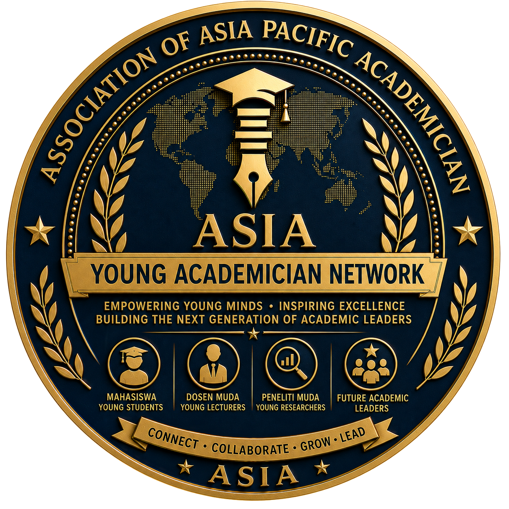

ASIA Young Academicians Network
Connect. Grow. Lead.
The ASIA Young Academicians Network (ASIA-YAN) is the official network for young academics, emerging scholars, early-career researchers, doctoral candidates, postdoctoral fellows, and future academic leaders under the Association of Asia Pacific Academician (ASIA). It serves as the strategic platform for connecting, empowering, mentoring, and preparing the next generation of academic leaders across the Asia-Pacific region.
ASIA-YAN creates an inclusive ecosystem where young scholars can strengthen academic competencies, expand international networks, collaborate in multidisciplinary research, participate in global academic activities, develop leadership capacity, and contribute to addressing regional and global challenges through education, research, innovation, and community engagement.
The Network is founded on the belief that the future of higher education depends on investing in the next generation of scholars. Young academicians are not merely future successors—they are today's innovators, researchers, educators, entrepreneurs, and changemakers.
As one of ASIA's strategic bodies, ASIA-YAN functions as the talent development and leadership pipeline that prepares outstanding members to contribute actively across every initiative within the ASIA ecosystem.
"To become the leading Asia-Pacific network that develops globally connected, innovative, ethical, and impactful young academicians who will shape the future of higher education, research, and professional leadership."
ASIA-YAN is committed to:
Connecting young scholars, universities, research institutions, and professional communities across borders.
Strengthening competencies in research, teaching, publication, leadership, communication, digital technology, and innovation.
Connecting emerging scholars with distinguished professors, senior researchers, and experienced academic leaders.
Providing international experiences through conferences, research collaboration, exchange programs, and global academic engagement.
Preparing future academic, institutional, and professional leaders through structured leadership programs and practical experience.
Developing a continuous pathway that enables young academicians to grow into future leaders within the ASIA ecosystem.
ASIA-YAN serves as the official young academic development platform responsible for:
An integrated ecosystem consisting of:
The progressive path mapping the professional growth of emerging scholars into influential figures within the international academic community.
ASIA-YAN welcomes members from all multidisciplinary academic fields represented by ASIA:
Membership categories include young lecturers, doctoral candidates, postdoctoral researchers, early-career academics, emerging researchers, and young professionals with academic interests.
Strategic Commitment: ASIA-YAN is committed to nurturing a globally connected generation of young academicians who demonstrate academic excellence, ethical leadership, innovation, international collaboration, and a lifelong commitment to advancing education, research, and sustainable development.